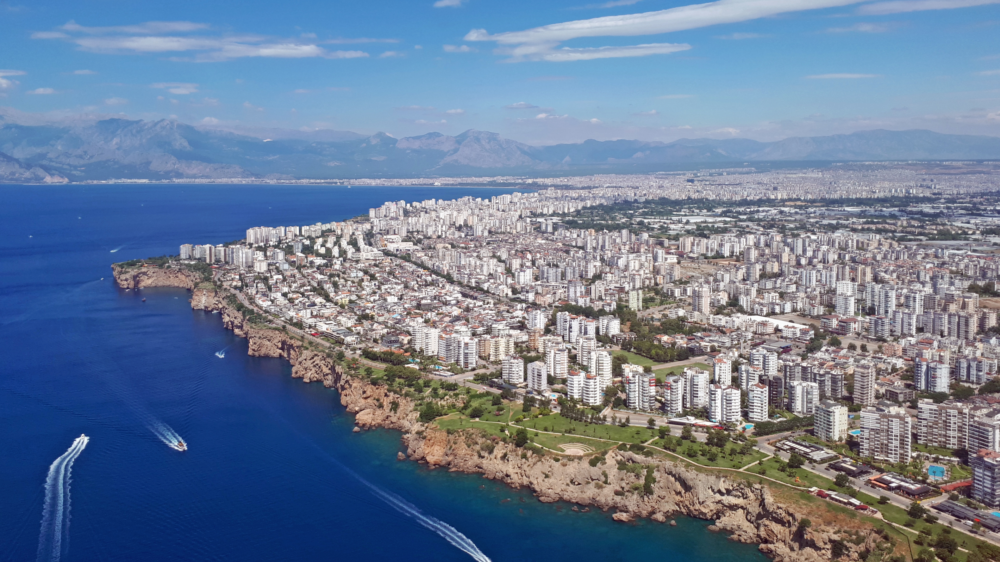

Location and Geography

- Strategic Location: Located at the intersection of international maritime trade routes and logistics lines in the Eastern Mediterranean basin.
- Coastline (638 km): Features indented structure, cliffs, and natural harbors. Encompasses the historic Lycian and Pamphylian coasts.
- Climate Details: High humidity (60-80%) during summer months. Snow and frost events are classified as extreme natural phenomena on coasts. Natural vegetation consists of heat and drought-resistant macchia shrublands and red pine forests.
- Geomorphology: Hilly Teke Peninsula in the west and the Taurus Plateau in the east. The dominant karst landscape is the primary cause of underground rivers, sinkholes, caves (Karain, Damlataş), and dolines.
Demographics and Administrative Structure
- Population Dynamics: Experiences continuous internal migration due to high labor demand in tourism and agriculture sectors. Hosts a significant foreign population from Russia, Germany, and England.
- District Distribution:
- Muratpaşa & Kepez: The city's commercial, administrative, and demographic centers. Intense urbanization.
- Alanya & Manavgat: Main mass tourism, bed capacity, and foreign exchange revenue centers on the eastern axis.
- Konyaaltı: Western coastal axis and luxury residential area.
Economy
- Tourism: Mass tourism (all-inclusive concept), world-class golf tourism in Belek, football camps in winter, sports and congress tourism.
- Agriculture: Kumluca (tomatoes and vegetables), Finike (citrus fruits), Gazipaşa (tropical fruits like bananas, avocados, and mangoes). Main supplier of Turkey's winter fresh vegetables.
- Industry: Antalya Free Trade Zone (ASBAŞ) specializes in luxury yacht manufacturing and medical product/equipment production for the global market.
History
- Ancient Period: Intersection of Pamphylian ("Many Races") and Lycian ("Land of Light") cultures. Designed as a military naval base by King Attalos II of Pergamon in the 2nd century BC.
- Roman and Byzantine: Golden age in Mediterranean trade. Important position in Christian history as an episcopal center (Demre/Myra - Saint Nicholas).
- Turkish-Islamic Period: After the Seljuk conquest in the 13th century, it became the main naval base, shipyard, and trade port of southern Anatolia.
Historical and Tourist Areas
Ancient Cities
- Aspendos: One of the best-preserved Roman theaters in the world with unaltered acoustics.
- Perge: Pamphylian capital famous for its Hellenistic towers, columned streets, and ancient water channels.
- Termessos: Steep city built on the summit of Güllük Mountain, never conquered by Alexander the Great.
- Patara & Xanthos: Capital of the Lycian League, home to the world's oldest known democratic assembly building (Patara) and UNESCO World Heritage Site (Xanthos).
- Olympos & Phaselis: Ancient Lycian port cities built where pine forests meet the sea.
City Center
- Kaleiçi: Continuous layered architecture of civil structures from the Hellenistic, Roman, Byzantine, Seljuk, and Ottoman periods.
- Hadrian Gate: A monumental three-arched gate built in 130 AD to honor the visit of Roman Emperor Hadrian.
- Yivli Minaret: 13th century, one of the city's first Islamic monuments and symbol of the Seljuk period.
Natural Areas
- Waterfalls: Düden (flows directly from cliffs into the sea), Kurşunlu (botanical park with endemic flora), Manavgat (wide riverbed with high water volume).
- Köprülü Canyon: Turkey's main center for rafting, nature sports, and canyon trekking.
- Saklıkent: Mountain microclimate on the Beydağları range, allowing swimming and skiing on the same day.
Beaches
- Konyaaltı: 7 km urban pebble beach.
- Lara: Fine sandy shoreline, themed hotel resort area.
- Kaputaş: Turquoise cove located at the canyon mouth along the Kaş-Kalkan road.
- Çıralı: Primary nesting area for loggerhead sea turtles (Caretta Caretta), protected natural site.
- Kleopatra: Shallow fine sandy beach in the center of Alanya.